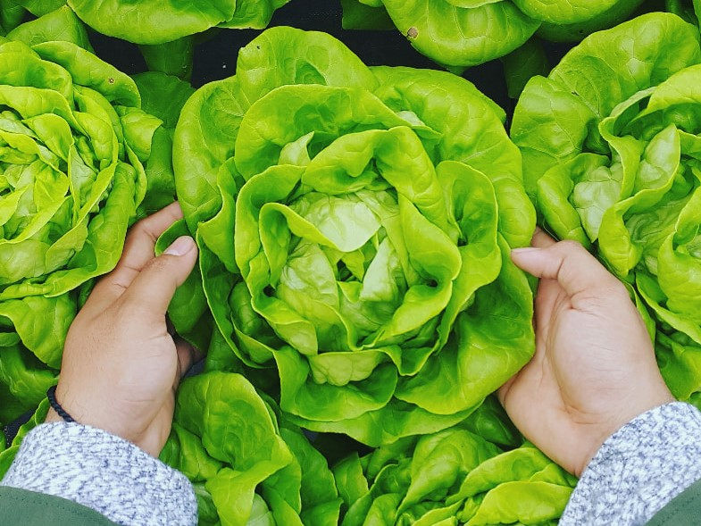

品牌起源
綠藝饗宴的品牌起源 綠藝饗宴的創辦人林先生，原本經營多家葷食餐廳，但在一次聚會中聽到「尊重生命、不要去傷害動物」的理念後，決定轉型經營素食餐廳。2001年1月5日，選在世界環境日這天，陳健宏先生在枕頭山上創立了綠藝饗宴，致力於推廣天然、食養和環保的飲食理念。 綠藝饗宴以無添加、不食品加工的方式製作料理，強調食材的原味，並結合茶道、繪畫藝術等元素，為顧客提供獨特的用餐體驗。餐廳的菜單隨季節變化，讓顧客每次來訪都能品嚐到不同的創意料理。 林先生堅信，蔬食不僅是一種飲食選擇，更是一種生活態度。他希望通過綠藝饗宴，讓更多人認識到蔬食的美味與健康，並推動永續飲食的發展
關於我們
歡迎來到「綠藝饗宴」素食餐廳！我們致力於提供健康、美味且創新的素食料理，讓每一位顧客都能享受到純天然的美食。我們的菜單靈感來自世界各地的素食文化，精選新鮮的當地食材，並以愛心和創意烹調每一道菜餚。 在「綠藝饗宴」，我們相信素食不僅僅是一種飲食選擇，更是一種健康、環保和可持續的生活方式。我們的廚師團隊不斷探索新的食譜和烹飪技術，確保每一餐都能帶給您驚喜和滿足。 無論您是素食主義者，還是只是想嘗試健康的飲食，我們都歡迎您的光臨。來「綠意饗宴」，體驗美味與健康的完美結合，讓我們一起享受這場綠色饗宴吧！
聯絡我們
連絡電話：0900-000-000
email@gmail.com.tw
地址：408台中市南屯區公益路二段51號18樓